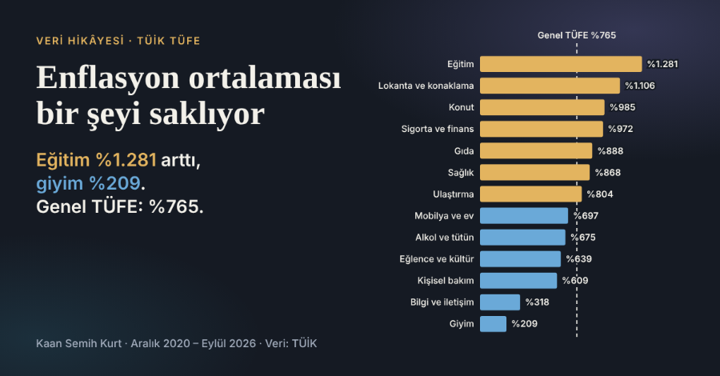

ŞİMDİ · EĞİTİM
Büyük Veri Analistliği (Ön Lisans)
Manisa Celal Bayar Üniversitesi · Devam ediyor, son yıl
MCBÜ · Son sınıf öğrencisi
Büyük Veri Analistliği Öğrencisi
Veri analizi, yazılım ve donanım alanlarında çalışan; öğrenmeye açık ve proje odaklı biriyim.
Mühendislik temelleri, analitik düşünme.
Manisa Celal Bayar Üniversitesi Büyük Veri Analistliği programının son sınıfındayım. Lisede makine teknikerliği okuyarak edindiğim mühendislik temellerini ve analitik düşünme becerimi, havacılık sanayisindeki 9 aylık stajımla profesyonel iş ortamına taşıdım.
Python ve C# ile yazılım projeleri geliştiriyorum. Donanım mimarisi bilgimle sistem performansını artıracak çözümler üretebiliyorum. Teknik problem çözmeyi ve yeni şeyler öğrenmeyi seviyorum.
ŞİMDİ · EĞİTİM
Manisa Celal Bayar Üniversitesi · Devam ediyor, son yıl
2024 · EĞİTİM
MOSTEM Mesleki ve Teknik Anadolu Lisesi
2023–2024 · DENEYİM (9 AY)
HMS Uçak ve Havacılık Sanayi, Manisa
Raporlama, veri tablolama ve proje sunumu için ileri düzeyde.

ÖNE ÇIKAN PROJE
Kullanıcı Arayüzü Tasarımı dersi için hazırladığım proje. TÜİK'in TÜFE verilerini kullanarak 13 harcama grubunun 2020'den 2026'ya nasıl farklı hızlarda pahalandığını anlatan, kaydırmayla ilerleyen interaktif bir veri hikâyesi.
Bir proje fikrin ya da sorun varsa bana yazabilirsin.